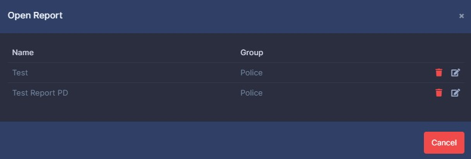

Report Templates
Exploring the builder
From top to bottom, the file icon is new, the folder icon is open, and the disk icon is to save.
The report name field and group the template can be created in.
Note
Load Template is disabled currently, these will be preset fields to add to your reports.
Under that, the toolbar you have a list of components you can create. You drag and drop them into the preview pane on the right.
Creating Report Templates
When you first enter the page, you are given an unsaved new report. You can choose the components and options you want on it by dragging and dropping them to the left pane.
Note
As of version 4, report templates not have a undo(ctrl+z) and redo(ctrl+y) option. You can undo up to 7 changes.
Important
As of version 4, report templates are not saved in real-time. Instead, it's saved in the browsers local storage. This means if you lose connection to the internet, you can continue to create the report and save it when your connection returns. This also means if you close the window by mistake, your data is not lost. When you return to the report builder, it will automatically load unsaved data.
Opening and deleting report templates
Templates can be opened by click the folder icon. A new dialog will appear.

Clicking the file icon again will open the template. The trash icon will delete it.